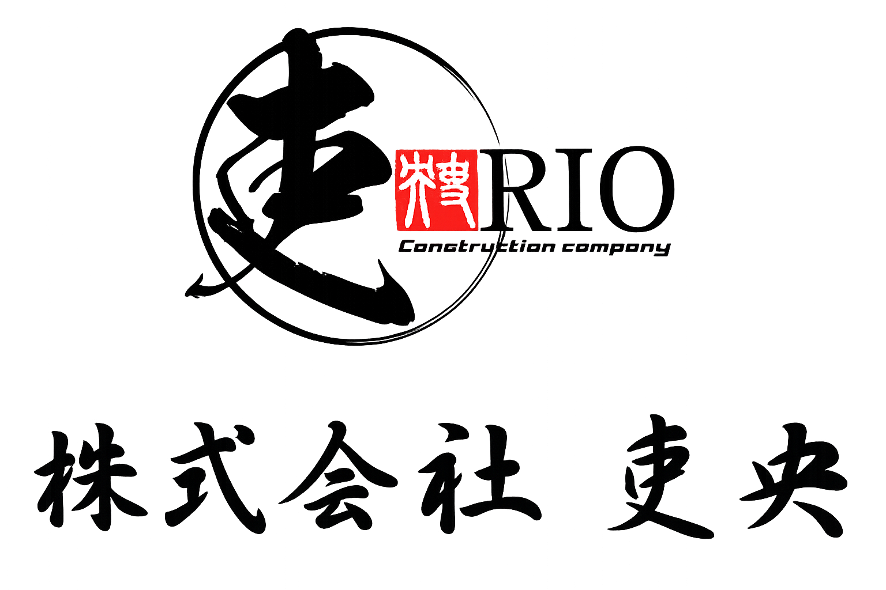
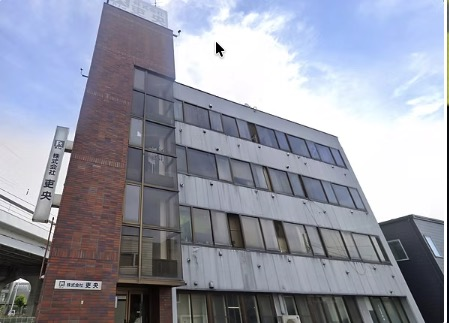
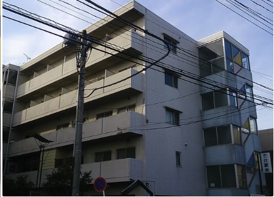

解体工事
札幌の内装解体を中心に、住宅・ビル・工場の内装や構造物の解体に取り組んでいます。厳格な安全管理と適正な分別・リサイクルで、新しい建築の開始点をつくります。
壊す — そして、ひらく。
壊すことから、未来をつくる。
壊すことも、つくることも。
次の景色へつなぐ仕事です。
私たち株式会社吏央は、札幌と横浜を拠点に、解体・土工・とび職を展開しています。札幌では内装解体を中心に、横浜では新築現場の土工事を中心に。建物を解き、土地を整え、足場を組む。異なる仕事のすべてに通うのは、人と人をつなぐというひとつの意志。安全で効率的な作業を積み重ね、信頼されるパートナーとして次の景色を支えます。
札幌の内装解体を中心に、住宅・ビル・工場の内装や構造物の解体に取り組んでいます。厳格な安全管理と適正な分別・リサイクルで、新しい建築の開始点をつくります。
壊す — そして、ひらく。横浜の新築現場を中心に、土地の整地、根切り、基礎・コンクリート工事を行います。精密な作業と最適な機材で、建築物の安定と安全を足元から支えます。
掘る — そして、整える。足場の設置・解体、高所作業、資材搬入、仮設工事。仲間の命を預かる責任と確かな技術で、現場の骨格を組み上げます。
組む — そして、つなぐ。時代が移り変わっても、仕事は進化し続ける。けれど、人の心をつなぐという本質は変わりません。安全を守ること。技術を磨くこと。互いを信頼すること。その一つひとつが、まだ見ぬ未来の輪郭になります。
技術だけでは、いい仕事はできない。挨拶、約束、気配り。人として当たり前のことを、どの現場でも丁寧に積み重ねます。

〒001-0923
札幌市北区新川3条5丁目8-8 MAP ↗
TEL 011-374-8012 FAX 011-374-8013

〒224-0053
横浜市都筑区池辺町4618 MAP ↗
TEL 045-930-3366 FAX 045-930-3367
〒064-0804
札幌市中央区南4条西3丁目1-1 新ラーメン横丁内 MAP ↗
TEL 011-521-5963
味一番つばさ 公式ホームページ ↗
札幌市東区東雁来町302番78 周辺MAP ↗
札幌市東区東雁来町302番79 周辺MAP ↗
地図は東雁来町302番付近を表示します。
経験よりも、誠実さ。
技術は、仲間と磨いていける。
札幌本社では内装解体を中心に、ビル・商業施設・教育施設などの工事を行っています。道新ビル大通館、道銀ビル、札幌共和女子学生会館などの内装解体実績を掲載しています。札幌の施工実績を見る
横浜支店では新築現場の土工事を中心に、とび・仮設工事に取り組んでいます。住宅・ホテル、教育施設、物流施設などの施工実績を掲載しています。横浜の施工実績を見る
札幌本社は011-374-8012、横浜支店は045-930-3366へお電話ください。お問い合わせ窓口もご利用いただけます。
札幌・横浜の両拠点で、経験者に加えて未経験から挑戦したい方も募集しています。現在の募集内容は採用情報の求人リンクからご確認ください。